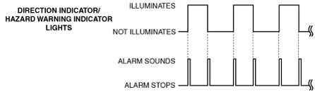

TURN AND HAZARD INDICATOR ALARM
id092200020800
Purpose
Function
|
Sound frequency (Hz)
|
Direction indicator/hazard warning indicator lights turn off to on: 1,400
Direction indicator/hazard warning indicator lights turn on to off: 1,300
|
|
Wave pattern
|
 |
Construction
Operation
1. The instrument cluster receives (1) a direction indicator/hazard warning indicator signal via CAN communication from the BCM.
2. The instrument cluster turns the transistor on (2) based on the direction indicator/hazard warning indicator signal.
3. When the transistor turns on, a ground circuit with the turn and hazard indicator alarm is established and the turn and hazard indicator alarm sounds (3).
am2zzn00002876
|
Fail-safe